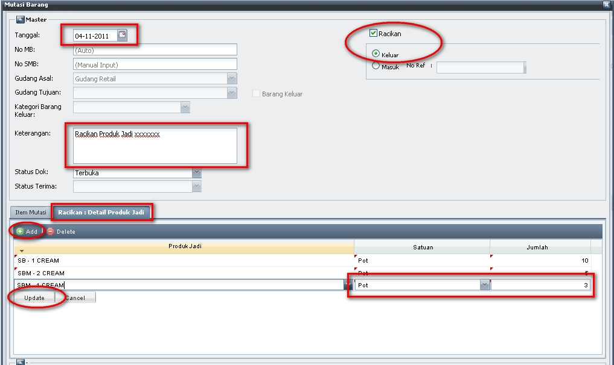
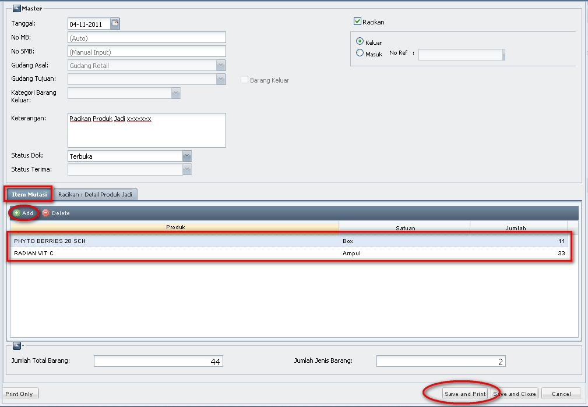

Langkah-langkah untuk membuat MB Racikan Keluar:
(Gudang Asal akan otomatis terisi)
3. klik pada tab "Racikan : Detail Produk Jadi" untuk memulai mengisikan detail dari produk jadi tersebut
4. klik "Add" , dan Pilih Produk Jadi, Jumlah, dan Satuan, dan Jumlah-nya. (Jangan lupa utk selalu menekan update utk memastikan produk tersebut)
Contoh instruksi untuk nomer 1-4 :

5. kemudian pilih tab Item Mutasi, lalu klik Add, inputkan detail / bahan dari Produk Jadi tersebut
6. klik Save and Print
contoh utk instruksi nomer 5-6 : 
Note:
Copyright © 2010, IT Department of Miracle Aesthetic Clinic Group
Created with the Freeware Edition of HelpNDoc: Easy CHM and documentation editor